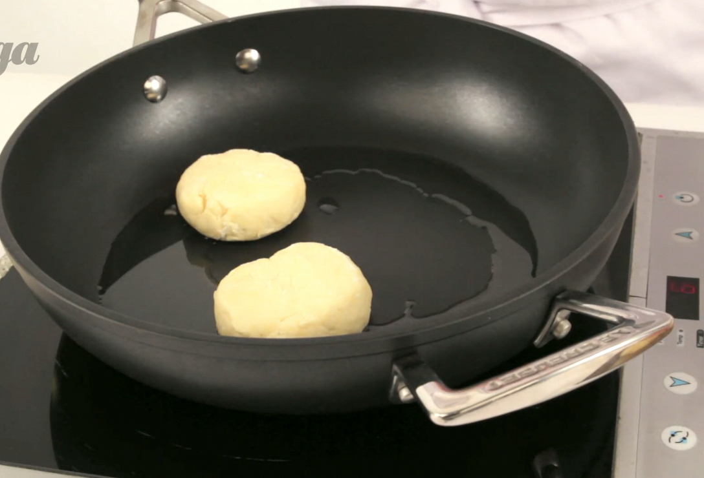

Главный секрет идеальных сырников — а точнее творожников, — творог нужно протереть через мелкое сито и отжать от влаги. Жирность предпочтительна не больше и не меньше 9%. Тесто должно получиться эластичным, чтобы при надавливании сырник не треснул на сковородке, а сохранил форму. Если все сделать правильно, получатся нежные однородные кругляшки под плотной румяной корочкой. Сырники можно запекать в духовке или готовить на пару. В рецепте не исключаются эксперименты с начинкой — сухофрукты, орехи, свежие фрукты и даже картофель лишними не будут. Приятного аппетита.
Инструкция приготовления
1)Положите весь творог в кастрюльку и разомните его вилкой так, чтобы в нем не осталось крупных комков. Разбейте в него яйца, всыпьте сахар и тщательно все перемешайте. Лучше не использовать слишком сухой или слишком влажный творог, иначе сырники будут разваливаться в процессе приготовления.
2)Всыпьте в творог 5 столовых ложек (с горкой) муки и тщательно перемешайте. Можно добавить немного больше муки, сырники получатся тогда более плотными. Или муки можно добавить чуть меньше, и тогда сырники будут нежнее. В итоге у вас должна получиться однородная масса, из которой можно будет лепить сырники.
3)Поставьте сковороду на средний огонь и налейте в нее подсолнечное масло.
 4)Насыпьте на тарелку немного муки. Слепите несколько небольших шариков из получившейся творожной массы и положите их на тарелку. Лучше лепить разом 4–5 шариков — столько, сколько поместится одновременно на сковороду. Затем по очереди обкатывайте творожные шарики в муке, плющите их в небольшие лепешки (они не должны быть слишком тонкие) и выкладывайте на сковороду.
5)Обжаривайте сырники 1–2 минуты до появления золотистой корочки. Затем переверните их на другую сторону и также обжарьте до золотистого состояния.
4)Насыпьте на тарелку немного муки. Слепите несколько небольших шариков из получившейся творожной массы и положите их на тарелку. Лучше лепить разом 4–5 шариков — столько, сколько поместится одновременно на сковороду. Затем по очереди обкатывайте творожные шарики в муке, плющите их в небольшие лепешки (они не должны быть слишком тонкие) и выкладывайте на сковороду.
5)Обжаривайте сырники 1–2 минуты до появления золотистой корочки. Затем переверните их на другую сторону и также обжарьте до золотистого состояния.

6)Повторяйте, пока творог не закончится.